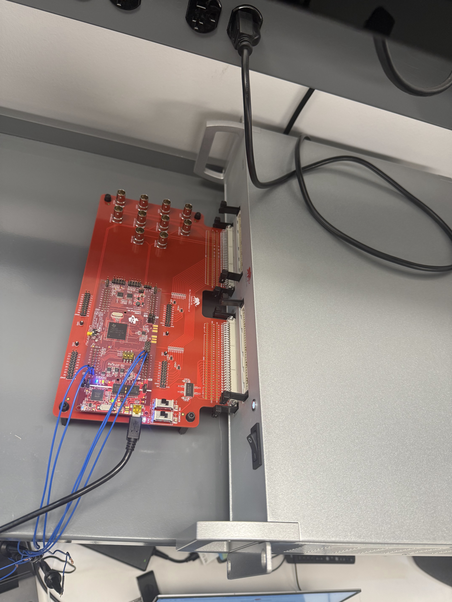
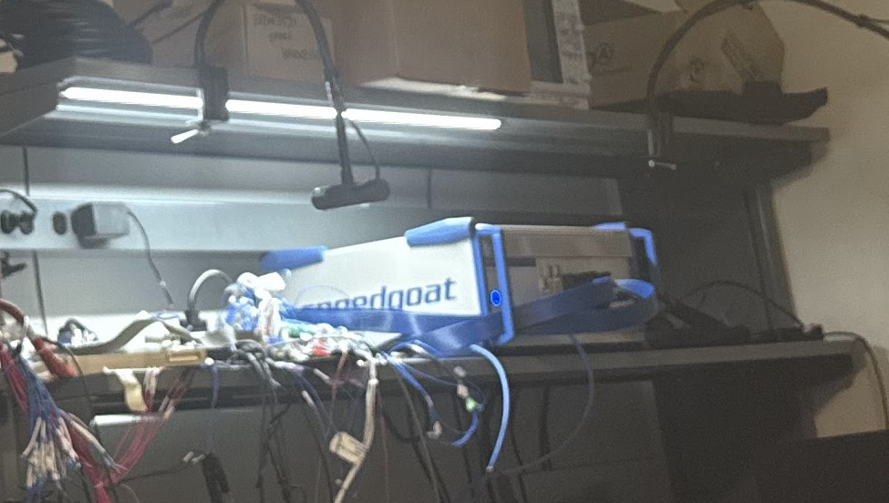
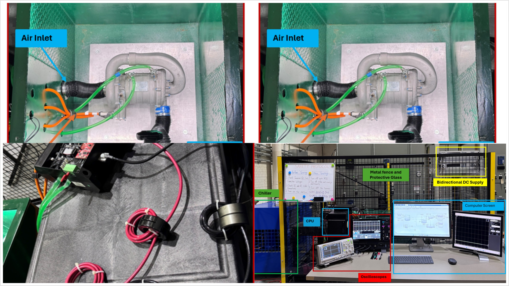
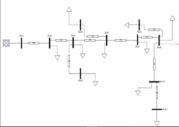
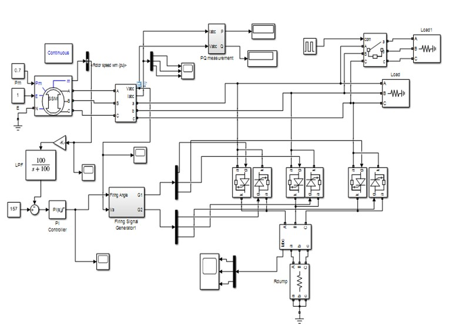

Cummins Inc — Power Electronics Control & System Integration (Intern)
Ultra high‑speed PMSM drive controls (FOC/DTC), SIL/HIL evaluation, TI LaunchPad + FPGA integration for drive & DC‑DC systems.



Ph.D. Student | Power Electronics & Motor Drives | High‑Speed PMSM Control | Advanced Control Systems
Ph.D. student in Electrical & Computer Engineering at Mississippi State University, specializing in high‑performance motor drive control and power electronics for next‑generation energy systems. Background spans both industry and research, including work in power distribution, high‑speed PMSM control, and hardware‑in‑the‑loop (HIL) validation.
Research focuses on developing and optimizing control strategies for Ultra High‑Speed PMSM compressors, utilizing FOC, DTC, and emerging MIMO‑based control frameworks to achieve robust, high‑bandwidth torque and speed regulation. Interested in advanced converter topologies and real‑time control implementation for power conversion and electric drive applications.
I work at the intersection of power electronics, advanced control systems, and high‑performance electric drives. My focus is designing robust, high‑speed motor control algorithms and implementing them on real hardware with modern simulation and HIL platforms.
I've contributed to Ultra High‑Speed PMSM drive projects—designing, tuning, and validating strategies like Field‑Oriented Control (FOC), Direct Torque Control (DTC), and emerging MIMO‑based control. My work spans modeling to implementation, targeting high bandwidth, low torque ripple, and stable operation under extreme dynamics.
Beyond drives, I work on power converter control (e.g., modified PFC), digital loop design, and real‑time validation using Plecs/RT‑Box. I enjoy translating control laws, machine models, and converter dynamics into reliable, testable, hardware‑ready solutions.
Ultra high‑speed PMSM drive controls (FOC/DTC), SIL/HIL evaluation, TI LaunchPad + FPGA integration for drive & DC‑DC systems.


Developing, optimizing, and validating high‑performance motor drive control frameworks and executing real‑time HIL simulations for advanced compressor systems.


Delivered academic instruction on power systems analysis, electrical machines, and transmission network dynamics while advising undergraduate laboratory designs.

Analyzed regional electricity distribution networks, evaluating line losses and load parameters to enhance grid infrastructure planning.


Enabled a PV inverter to provide active/reactive power based on irradiance to improve utilization. Tools: MATLAB/Simulink, PSIM.

Compared harmonic performance and power factor of GTO vs. Thyristor rectifiers for isolated micro‑grid loads.
Advanced specialization in Power Electronics, Feedback Control I & II, Non-linear/Optimal Control, Power Systems Analysis, Stability & Optimization, and High-Frequency Power Electronics Conversion frameworks.
Undergraduate Thesis: "Implementation of PV‑Solar Inverter STATCOM in Grid Connected System (PV‑STATCOM)". Focused on grid synchronization, harmonic mitigation, and local voltage profile adjustments.